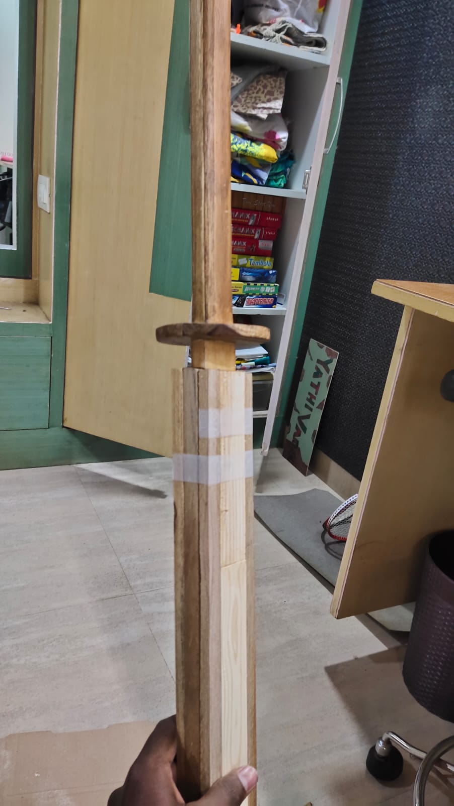

Ever since I watched Demon Slayer animation I always wanted to own a Katana like every character in the series. Eventhough the market for this merchendise is huge my pocket isn't, so I decided to make one my own.
It was during quarantine when I made my first katana which turned out really cool. Still it's small comparing to real ones and it does not have any finishing. Later after few months I made another one which looked similar to the first one but has those little details.
After some long time I decided to make a full fleged katana(wooden ofcourse) with all the experience I gained so far and was finally able to make one which is almost identical to practice katanas.
It was really tough to make one on my own especially with no tools. That's right only tools I used in this project was a blade with no handle and few sandpapers, it was a horror since I had no experience working with wood and I was hoping it to turn out well and it did.
Here are some pictures related to design work of the project.
Click here to check few more posts of my project!
Contact